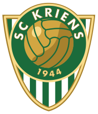
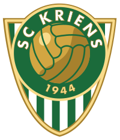

SC Kriens

Marc:

Ich spiele schon seit 3 Jahren Fussball im Verein und habe die Stufen:
F-Pool
Ed
Eb
Dd
besucht.
Ich werdde wahrscheindlich noch ein Jahr Fussball machen, bis ich austrete.

Ich spiele schon seit 3 Jahren Fussball im Verein und habe die Stufen:
F-Pool
Ed
Eb
Dd
besucht.
Ich werdde wahrscheindlich noch ein Jahr Fussball machen, bis ich austrete.